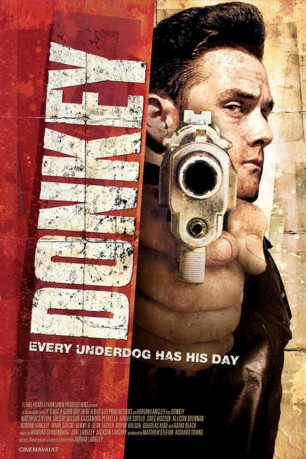
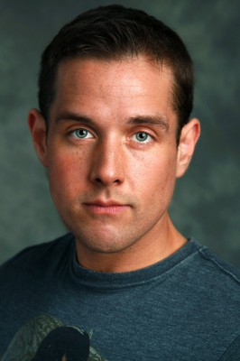

#290 Donkey
 
 IMDB-Wertung: 4.0 / 10
IMDB-Wertung: 4.0 / 10  Metascore: 0
Metascore: 0 
Donald kommt aus dem Gefängnis frei, wo er saß, nachdem ihn ein falscher Freund erst in den Schlamassel ritt und dann allein drin sitzen ließ. Nun möchte er nur noch abrechnen und mit der Tochter eines reichen Gangsters ein neues Leben beginnen. Was aber gar nicht so einfach ist, weil seine Freundin eben erst gegen Lösegeld gekidnappt wurde. Und weil ihr Vater bei näherem Hinsehen weder sonderlich reich noch der Gangster ist, für den ihn alle halten, ist es an Donald, das Mädchen und den Tag zu retten. Und zwar gegen sämtliche widrigen Umstände.
Jahr: 2010
Dauer: 90 Minuten
FSK: 18
Land: Kanada Studio: DTP EntertainmentTonspuren:
Untertitel:
Auflösung: 720p (1280×544) Größe: 3174 MB
Genre: Action, Krimi, Drama
Regisseur: Adrian Langley
Drehbuch: Adrian Langley
Soundtrack: Howard Sonnenburg
Darsteller:
-  Matthew Stefiuk als Don Keys
- Xavier Sotelo als Joseph Riccoli
- Sean Tucker als Agent Toback
- Allison Brennan als Stevie
 Adam Beach als Slade
Adam Beach als Slade- Douglas Kidd als The Bartender
- Luigi Saracino als Tommy Sarno
- Jon McLaren als Sebastian
 Robert Reynolds als John
Robert Reynolds als John- Helena-Alexis Seymour als Ricky's Girlfriend
- Eddie Guillaume als Officer Richardson
- Sally Clelford als Officer Smyth
- Gregory Wilson als Ricky Jarnesky
- Cassandra Petrella als Bella Riccoli
- Greg Hiscock als Detective Russell
- Wayne Wilson als Agent Leadman
- Valerie Casault als Alexia
- Adrian Langley als Raphael
- Mark Slacke als Andy
- Kenny B. als Mike
- Erin Gardam als Roxanne
- Anastasia Kimmett als Officer Havelock
- Jonas Elliott als Chev the Prison Guard
- Tom Halton als Sebastian's Friend Len
- Dave Reid als Sebastian's Friend Jared
- Landon Hicks als Russell's Partner
- Guy Louis XVI als Officer Price
- Richard Boyer als Officer Anderson
- Nadine Thornhill als Forensics Photographer
Datei: X:\FSK18-2010\Donkey (2010, FSK, 1280x544).mkv seit 16.02.2015
Festplatte: FSK18
 Es gibt insgesamt 35 Filme in der Gruppe 'FSK18-2010'
Es gibt insgesamt 35 Filme in der Gruppe 'FSK18-2010'